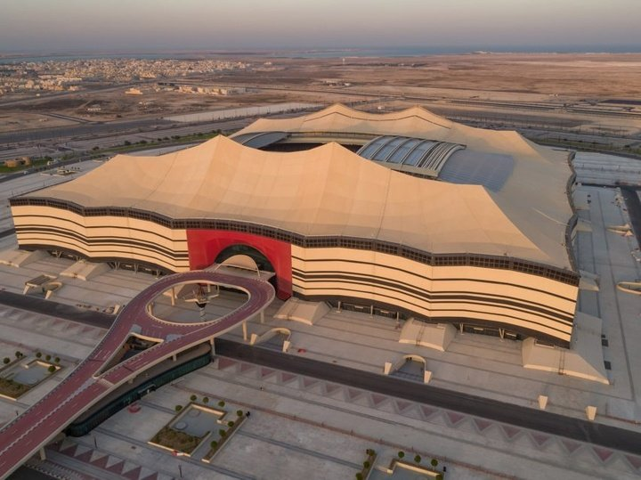

La Coupe du monde est la compétition la plus importante du football. Elle a lieu tous les quatre ans dans un pays différent. Elle fut fondée en 1930 à l'instigation des deux Français, Henri Delaunay et Jules Rimet (1873-1956), alors président de la FIFA (Fédération internationale de football association).
La Coupe du monde de football 2022 est la 22ᵉ édition de ce tournoi quadriennal. Organisée par la FIFA, elle se déroule au Qatar, (Site officiel du Qatar) du 20 novembre au 18 décembre 2022, jour de la fête nationale.
Elle opposera 32 équipes, dont 210 en phase qualificatives, a l'issu de 64 matches au total, jouer dans different stade du qatar. Le qatar possède 8 stades dont 1 stade démontables, fait pour cette évenement.
Pour voir la liste des vainqueurs de la coupe du monde de la fifa, Cliquez Ici